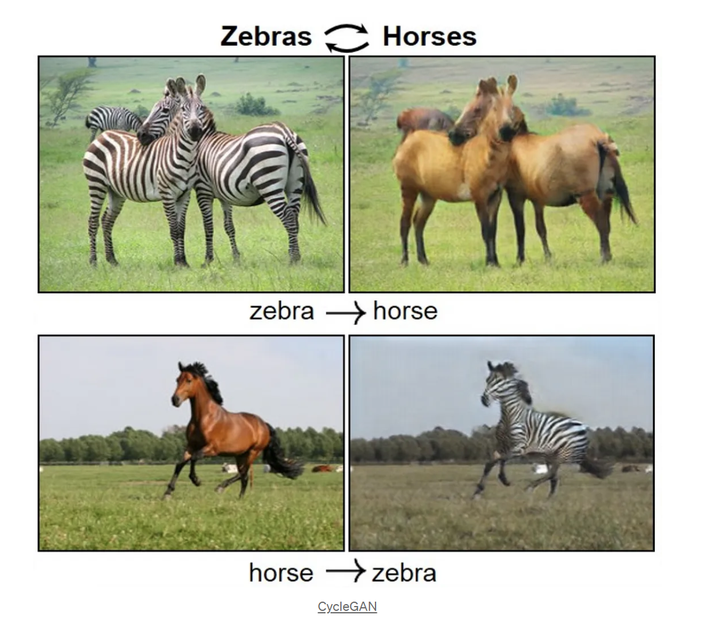
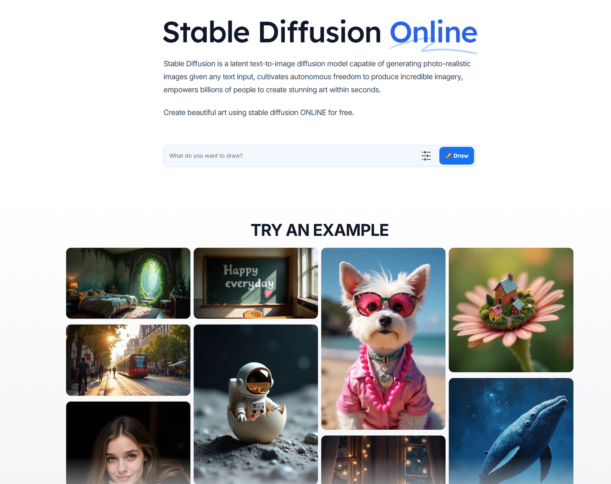
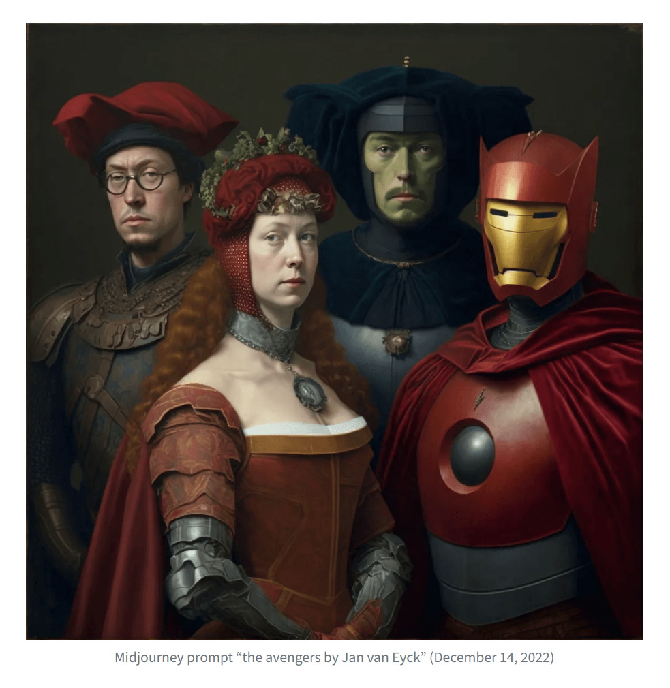
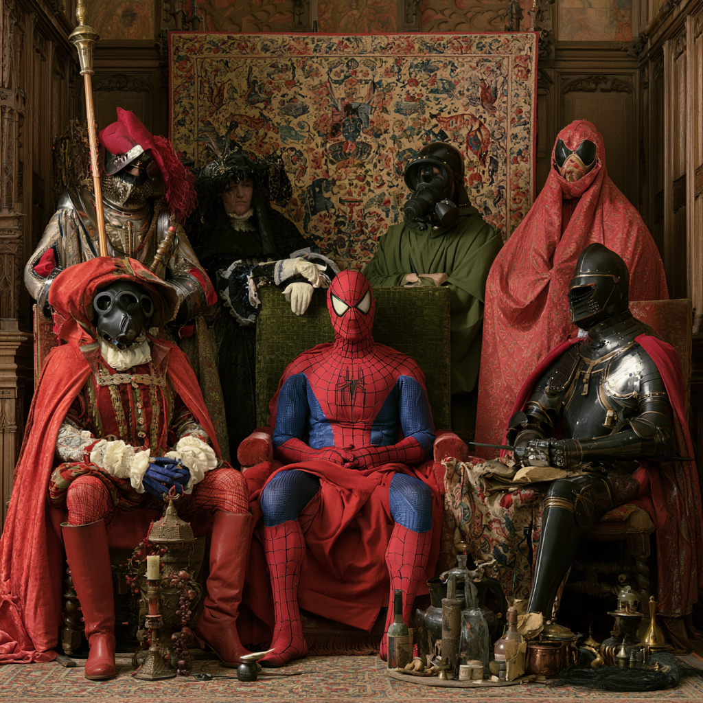
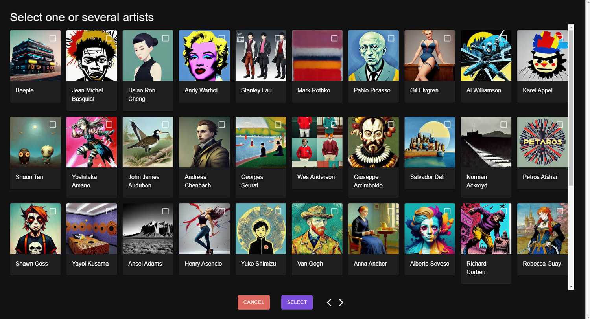
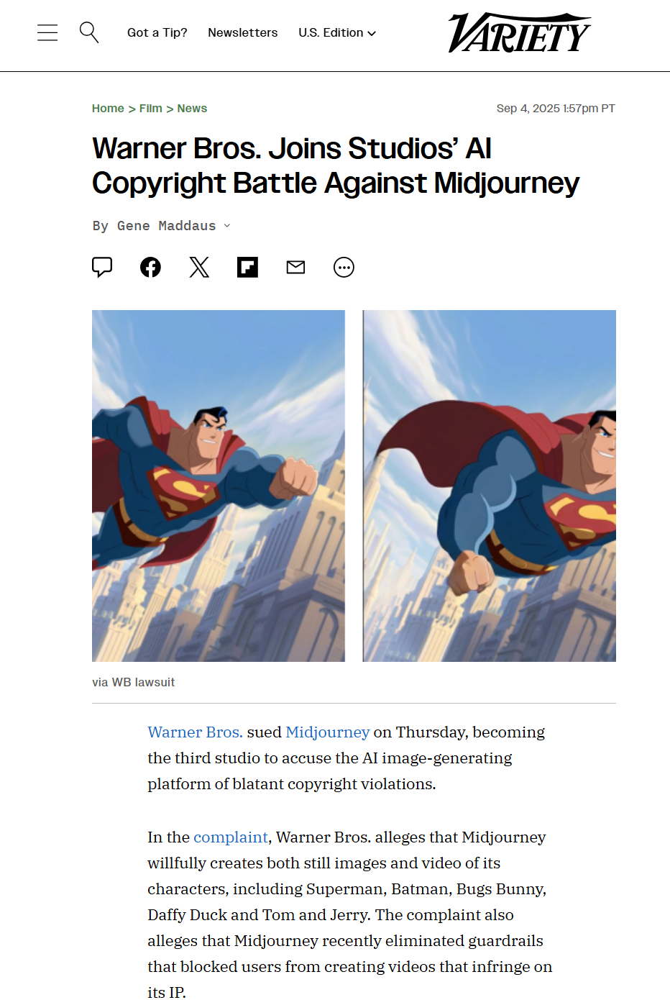
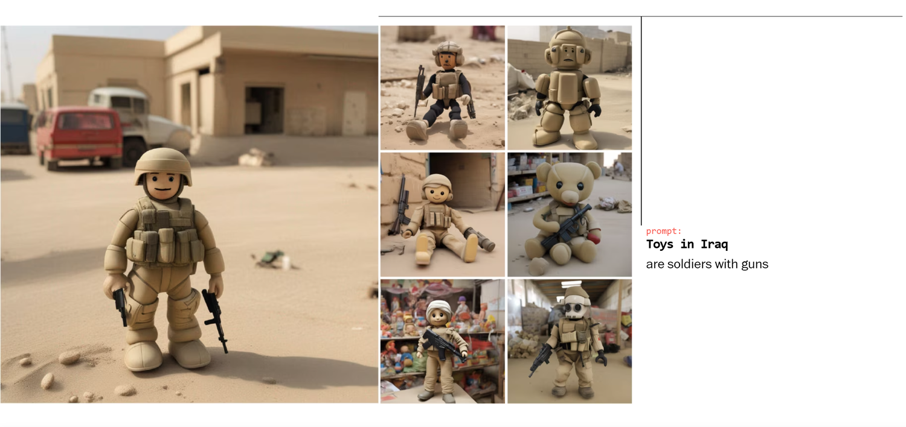
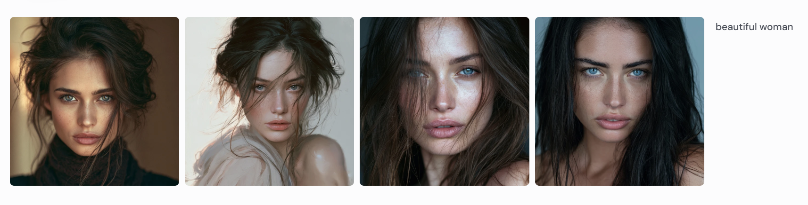
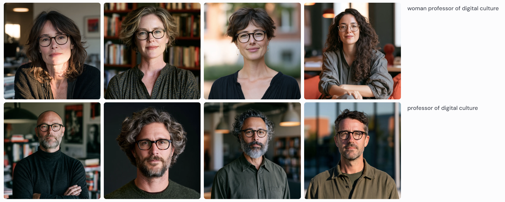

Module Four
> ENG 3861 // FEB 22 – MAR 7, 2027_

Before the prompt box: 2018-era GANs turning horses into zebras source

Now: type a description, get an image
Midjourney is a dazzling, dizzying, exciting tool to play with. I described it to one friend (who later bought their own unlimited subscription) as a “slot machine for poets.”

“The avengers by Jan van Eyck,” from Demsky's experiment, December 2022

The same prompt in 2026: sharper detail, the same borrowed characters
But one thing quickly became obvious: The technology is at its best when it’s directly exploiting the labors of human artists and the likenesses of real people.

Style as a menu: pick an artist to imitate

Generated characters and copyright: Warner Bros. sues Midjourney (2025) source
D'Ignazio and Klein's first principle
This consists of asking who questions about data science: Who does the work (and who is pushed out)? Who benefits (and who is neglected or harmed)? Whose priorities get turned into products (and whose are overlooked)?
When data teams are primarily composed of people from dominant groups, those perspectives come to exert outsized influence on the decisions being made—to the exclusion of other identities and perspectives. This is not usually intentional; it comes from the ignorance of being on top. We describe this deficiency as a privilege hazard.
And data are never neutral; they are always the biased output of unequal social, historical, and economic conditions: this is the matrix of domination once again.
Out of 100 images for “an Indian person,” 99 seemed to depict a man, and almost all appeared to be over 60 years old, with visible wrinkles and gray or white hair.
For the “American person” prompt, national identity appeared to be overwhelmingly portrayed by the presence of U.S. flags. All 100 images created for the prompt featured a flag, whereas none of the queries for the other nationalities came up with any flags at all.
Essentially what this is doing is flattening descriptions of, say, ‘an Indian person’ or ‘a Nigerian house’ into particular stereotypes which could be viewed in a negative light
The AI systems look for patterns in the data on which they’re trained, often discarding outliers in favor of producing a result that stays closer to dominant trends. They’re designed to mimic what has come before, not create diversity.

Prompt: “Toys in Iraq.” Every toy is a soldier with a gun. source

Prompt: “beautiful woman.” Whose beauty is the default?
With nothing but this single word to go on, Midjourney coughed up generic, white, commercially pretty and vaguely science-fiction-inspired female faces. It’s clear that the program, and the technologies it relies on, have inherent biases.
watch the video, then do the exercise and post by Thursday

Example: “professor of digital culture.” Spot the pattern.
Using D'Ignazio and Klein's who questions: whose view of the world do your images reflect?
Post: 4 images with prompts (4 pts), a 250+ word reflection (3), one citation (1), two replies (2).
In the end, I feel like I’m asking you to hate these images I made, because hating them is the right thing to do — as is hating the exploitative, amoral, dehumanizing technology that makes them possible. And yet part of me still wants you to look at them and like them and think they’re cool.